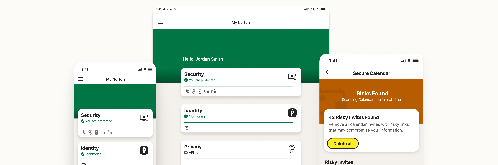

Norton 360 - Spam Protection and Design System for the Cyber Security Product

Introduction
Norton is a global leader in the consumer cyber safety space. In 2020, the company pivoted from a security only platform as it is popularly known for, into a multi-pillar cyber security platform. I was the primary product designer for the flagship offering from the company, Norton 360 on the iOS and iPad OS platforms.
Project Type & Involvement
Senior Product Designer
Timeline
Nov 2020 - Sep 2022
Platforms
iOS, iPad OS
How it all started?
In 2020, The organization’s business strategy pivoted from a security-only solution into an end-to-end consumer cyber safety product. The cyber safety risks evolved far beyond device/network risks which created a need for new additions for the modern world to protect users. Secondly, the product turned into an integration-centric product and also offered a white-labelled version of the product which required a robust design/engineering system to support the product.

PROJECT 1
#1 Spam Protection Features
Phishing through Spam is a common technique used by hackers to loot confidential information in your devices (i.e. SSN; Credentials etc). After the Covid-19 breakout in 2020, people started relying on the web for every single need; which also opened doors for hackers to utilize this to deceive users and grab information. Being the product designer for the cyber security platform on the iOS and iPad OS platforms, I worked alongside XFN stakeholders to identify solutions to prevent users from falling prey to spam on the platform. We worked on two feature additions into solving this problem (i.e) SMS Security which helped in identifying spam text messages and Secure Calendar which helped in identifying and removing risky calendar invites.
Secure Calendar
The problem
Hackers/ spammers utilize the default permissions to calendar from Safari, the default browser on iOS and iPad OS to add calendar invites containing malicious links compromising information on device. We found this as a potential opportunity for us to protect the users since there was no direct solution to the problem.

How do we help users in detecting and eliminating malicious calendar invites?
Research and Ideation

Wireframing and Solutioning

Final Outcome
The feature helped users identiy and eliminate risky invites and unsubscribe to the resepctive calendar subscriptions which prevents spammers from adding invites from the same subscription/domain. Additionally, the system over time improves the accuracy of detecting risky invites.

Scenario 1: Educate and Onboard
As a first step of the user journey, it becomes necessary to educate the users about the feature and collect necessary permissions to run the feature. Since, the Calendar permissions were sensitive to collect from the users and this step is crucial to get the feature up and running.

Sceanrio 2: Detects Risky Invites
The user might have quite a number of invites lying in their Calendar, the application connects with the server to analyze and run a scan to detect malicious invites or returns a safe state if there are no malicious invites.

Scenario 3: Eliminate Risks
If there are risky invites found, the user will have an option to delete the found invites and its occurances in a single tap or review them individually and get rid of them. Deleting the invites also removes the subscription to the malicious calendars.
Impact
The feature shipped in the end of 2021 and acted as a key differentiator in consumer cyber safety products. The product had a successful setup rate of over ~80% and detected ~XX Million Malicious Invites. As next steps, we want to introduce a way to report false positives if any. This will help further improve the accuracy of detecting malicious invites.
PROJECT 2
Design System
When I started working on the product from the scratch, beyond the feature additions, the product required a robust design system from both the design and engineering perspective. The product’s business model is dependent on two revenue streams. Products sold as B2C business to consumers; B2B2C business focused on white labeling first party products for third party organizations. First party products did not have a single source of truth to design or build integrations. Secondly, the white labeled applications were built as a separate applications from scratch in an inefficient fashion resulting in poor Turn Around Time.
How do we create a system to improve design and enginnering for first party and white label products

Research and Ideation
As with any Design System, I started by Audit the existing experience and Identifying elements and components that required standardization in collaboration with engineering. Over the aspects of a traditional design system , we also wanted to create a framework supporting white label applications and reusable plug and play SDKs to be reused with other first party or partner products. There was no dedicated design / engineering team for implementing this system. Hence, the strategy to design and implement this design system was to pair it along with a major organization wide brand refresh.

Strategy and structure
The strategy was to establish a common structure of design elements with both design and engineering. The basics consisting of foundations elements, components and patterns consisting of reusable modules and frameworks consisting of reusable app SDK’s to be bundle with any application that necessitates it.

Core Capabilities

Theming
This capability allows designers and engineers to create derived components by modifying properties under the same semantic names. This helped use the same component for both first party and third party products in terms of design and code.

Accessibility
One of the core foundational aspects of the system is to help designers create accessible experiences for users with Visual and Motor disabilities. All the components in this system adheres to the minimum standard of AA compliance in WCAG/ADA compliance.

Stack Mirroring
If there are risky invites found, the user will have an option to delete the found invites and its occurances in a single tap or review them individually and get rid of them. Deleting the invites also removes the subscription to the malicious calendars.

Responsive
The responsive guidelines helps contributors and users of the system to scale components and patterns to larger form factors (i.e iPads running iPadOS). This was achieved by establishing scale factors for each component. This was key to help increase readability and scale the product using the same underlying framework.
Impact
In the summer of 2022, we launched the new refreshed version of Norton 360 which shipped with the newest version of the design system in terms of both design and code architectire. Beyond front end improvements, this resulted in major improvements to reductions in code bloating and improving the process of collaboration between design and engineering resulting in increased Turn Around Time. This system is also used for partner applications by theming and reusing framworks. You can find some previews of the design library we worked on below.